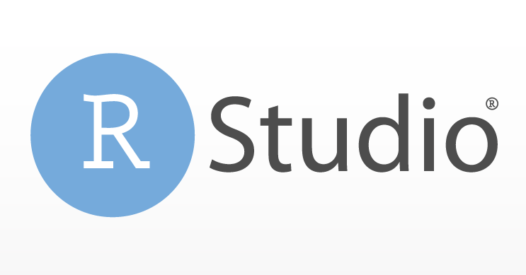

# Esto es una suma
1 + 1[1] 2Metodología Cuantitativa - TSM301
Clase 1
I. ¿Qué es R?
II. ¿Por qué usar R?
III. Iniciando R
IV. Bases de R
V. Comentando Scripts
I. ¿Qué es R?
R es un lenguaje de programación para la computación estadística y la visualización creado por Robert Gentleman y Ross Ihaka, profesores de estadística de la Universidad de Auckland en Nueva Zelanda.
Tiene la ventaja de ser gratuito y libre.
Una forma de contribuir al desarrollo de R es mediante la creación de un paquete.
Implica escribir código, que es la manera que tenemos de comunicarnos con el lenguaje.
Lo usaremos a través del IDE RStudio.

II. ¿Por qué usar R?
Gratuito. A diferencia de otros softwares de ciencias sociales (v.g. SPSS) o el propio Excel.
Libre. Permite que la comunidad introduzca nuevas funciones al software.
Potencia. Permite articular de mejor forma el procesamiento, análisis, visualización y reportería de datos.
Campo de aplicación. Estadística, negocios, ciencia de datos, ciencias naturales, etc.
Pero tambi√©n tiene desventajas ü•∫
Curva de aprendizaje empinada.
No está pensado para ejecutar comandos por interfaz gráfica, lo que puede ser difícil para algunas personas.
El uso de R ha aumentado durante los últimos 15 años. Este fenómeno se ha replicado en las ciencias sociales.
III. Iniciando R
Al abrir RStudio se encontrarán con tres paneles:
La Consola marcada por el recuadro color lila
El Enviroment o ambiente de trabajo en un color salmón
Las Utilidades en color verde
Los comandos que ejecutaremos directamente en la consola no mantienen un registro, por lo que usaremos un Script de R para conservar el código. Para iniciar un Script tenemos dos alternativas:
Seleccionar File → New File → R Script
Usar el atajo de teclado CTRL/CMD + SHIFT + N
La forma más sencilla de utilizar R sería como una calculadora:
# Esto es una suma
1 + 1[1] 2CTRL/CMD + ENTER → Ejecuta la línea que tienen seleccionada en el cursoCTRL/CMD + SHIFT + ENTER → Ejecuta todo el códigoCTR/CMD + L → Limpia toda la consola de resultados de RCTRL/CMD + S → Guarda el script. Si este no tiene nombre, primero pedirá guardarlo en un directorio y asignarle nombre
IV. Bases de R
Es posible usar R como una calculadora. Las operaciones más utilizadas son las siguientes
| Operación | |
|---|---|
+ |
Suma |
- |
Resta |
* |
Multiplicación |
/ |
División |
^ |
Potencia |
sqrt |
Raíz cuadrada |
log() |
Logaritmo base |
En R podemos crear objetos que guarden información o resultados. Para ello, se escribe el nombre y se les asigna los valores con el operador <-.
Los nombres permiten representar resultados de manera más fácil. Ejemplo:
Ingresamos tres notas y las dividimos por 3. Este resultado queda guardado en el objeto llamado “promedio”.
Luego, si queremos ver el resultado, basta con llamar al objeto promedio.
Si el nombre del objeto ya existe, se sobreescribirá su contenido.
# Guardamos esta operación matemática en un objeto llamado "promedio"
promedio <- (5.5 + 3.8 + 6.1) / 3Evite caracteres especiales como tildes, ñ, espacios, etc.
Consistencia en los nombres de variables. Puede usar nomenclaturas como Snake Case donde los nombres se escriben en el formato “nombre_objeto” o Camel Case que sigue el estándar “NombreObjeto”.
Recordar que R es sensible a mayúsculas y minúsculas. En el ejemplo anterior, definimos el objeto promedio. Si escribiéramos Promedio el software no lo reconocerá.
R cuenta con clases y tipos de datos definidos de antemano, los cuales dependen de la información que contengan en su interior. Los comandos class y typeof sirven para preguntar el tipo de cada elemento.
En la siguiente tabla se muestran algunas de las clases más frecuentes en R.
| Tipo | Descripción | Ejemplo |
|---|---|---|
integer |
Números enteros | -1, 0, 1 |
numeric |
Números reales | -0.5, 1/2, 1 |
character |
Texto/String | “Erwin”, “Armin”, “Sasha”, “Titanes” |
factor |
Datos categóricos | “Trabajo Social [1]”, “Otra carrera [2]” |
haven_labelled |
Valores numéricos con etiquetas asociadas | 1 = “Muy en desacuerdo”; 2 = “En desacuerdo”; 3 “Ni de acuerdo ni en desacuerdo”; 4 = “De acuerdo”; 5 “Muy de acuerdo” |
logical |
Verdadero o falso | “TRUE”, “FALSE” |
Los vectores son ordenamientos unidimensionales que solo pueden contener un tipo de dato. Se definen con el comando c().
Los vectores tienen valores y además una posición (index) asociada a cada valor. Esta comienza desde el número 1 en adelante.
Con el comando class() y typeof() se puede obtener información sobre los objetos
Si un vector contiene más de un tipo de dato, el programa forzará a que todos los datos sean del mismo tipo. Este proceso se conoce como coerción.
Noten que si el texto está entre comillas, el programa lo reconocerá como un caracter.
ejemplo_character <- "Soy un character inocente"
class(ejemplo_character)[1] "character"typeof(ejemplo_character)[1] "character"v_char <- c(40, "50 años", 33, "33") # Las comillas indican que es texto
# ¿Y si comprobamos la clase del últio vector que generamos?
# ¡Pregunta! ¿Por qué es de clase character?
class(v_char)[1] "character"typeof(v_char)[1] "character"Es posible acceder a cualquier elemento de un vector a través de su posición usando la notación []1.
1 Nota: si tienen problemas para escribirlos con el teclado, pueden usar ALT + 91 para [ y ALT + 93 para ]. Usualmente con solo escribir uno R debería autocompletar.
Respondamos algunas preguntas:
¿De qué tipo es este vector?
¿Cuántos elementos o qué largo tiene este vector?
¿Cómo puedo acceder al primer elemento del vector?
¿Cómo puedo acceder a los dos primeros elementos del vector?
¿Cómo puedo acceder a la última posición, sin saber su largo a priori?
despedida <- c("Eren", "Mikasa", "Armin", "Gracias por todo",
"Casi terminas :/", "Este 2023")
class(despedida)[1] "character"length(despedida)[1] 6despedida[1][1] "Eren"despedida[1:2][1] "Eren" "Mikasa"despedida[length(despedida)] # length es una función de R que entrega el largo de un vector[1] "Este 2023"matrix(). Este comando sigue la siguiente estructura:matrix(vector, nrow = n, ncol = m, byrow = FALSE)
Ejemplo de llenado por columnas
matriz_1 <- matrix(1:9, ncol = 3) # Llenado por columnas
matriz_1 [,1] [,2] [,3]
[1,] 1 4 7
[2,] 2 5 8
[3,] 3 6 9Ejemplo de llenado por filas
matriz_2 <- matrix(1:9, ncol = 3, byrow = TRUE) # Llenado por filas
matriz_2 [,1] [,2] [,3]
[1,] 1 2 3
[2,] 4 5 6
[3,] 7 8 9En R las matrices siempre siguen el orden (filas, columnas). Con esta lógica se puede seleccionar sus elementos: mi_matriz[i, j] ~ i = filas, j = columnas.
mi_matriz[i, ]: selecciona la fila i-ésima de la matriz.mi_matriz[, j]: selecciona la columna j-ésima de la matriz.mi_matriz[i, j]: selecciona el j-ésimo elemento de la i-ésima filaRealicemos un ejemplo con la matriz_2
matriz_2[1, 1] # Estoy seleccionando la fila 1 columna 1[1] 1matriz_2[2, 1] # Estoy seleccionando la fila 2 columna 1[1] 4matriz_2[1, ] # Estoy seleccionando a toda la fila 1[1] 1 2 3matriz_2[3, ] # Estoy seleccionando a toda la fila 3[1] 7 8 9matriz_2[, 1] # Estoy seleccionando a toda la columna 1[1] 1 4 7En R los dataframe son arreglos de datos bidimensionales (filas y columnas), pero que permiten distintos tipos de datos.
Es el caso usual de datos estructurados que se ven en los cursos de análisis de datos: las filas representan observaciones y las columnas variables.
Los tibbles son muy similares a los dataframe, pero con mejoras de calidad de vida. La función proviene del paquete tidyverse.
Los dataframes se generan a través de la función data.frame(), mientras que los tibbles con tibble().
Para trabajar con tibbles, requeriremos un paso previo antes üòÆ
Los paquetes permiten agregar funciones adicionales a R. Para su instalación, debemos usar el comando install.packages("nombrepaquete").
Se debe tener mucho cuidado con especificar de manera correcta el comando, o arrojará error.
Para utilizar el paquete ya instalado, en la sesión actual, se debe utilizar el comando library("nombrepaquete").
Prueben instalando y llamando el paquete tidyverse.
install.packages("tidyverse")# O un código más elegante, donde se instala solo si no lo tiene
if (!require("tidyverse")) install.packages("tidyverse")En los tibbles y dataframes uno también puede seleccionar directamente filas o columnas. Para ello, existen dos opciones:
Usar la notación de $ para acceder a columnas específicas.
Usar la notación de [[]] para acceder a columnas específicas.
Usar la notación de matrices [i, j] para acceder a filas y columnas.
nombre_base$nombre_variable
nombre_base[i, j]
nombre_base[[]]Para este ejemplo crearemos tres vectores y luego los guardaremos como un tibble.
# Generando una base de datos con comando data.frame
data_estudiantes_df <- data.frame(nombre, carrera, gen)
data_estudiantes_df nombre carrera gen
1 Constanza Ingeniería 2013
2 Sofia Administración 2018
3 Gonzalo Arqueología 2023# Generando una base de datos con comando tibble
if (!require("tidyverse")) install.packages("tidyverse")
# Con este código el programa instalará el paquete
# solo si no lo tiene
library(tidyverse)data_estudiantes_tb <- tibble(nombre, carrera, gen)
data_estudiantes_tb# A tibble: 3 × 3
nombre carrera gen
<chr> <chr> <dbl>
1 Constanza Ingeniería 2013
2 Sofia Administración 2018
3 Gonzalo Arqueología 2023# Con el comando View() con la primera en mayúscula, verán este tibble en RStudio.
View(data_estudiantes_tb)data_estudiantes_tb$nombre # accedemos a la columna nombre con $. Esto devuelve un vector[1] "Constanza" "Sofia" "Gonzalo" data_estudiantes_tb["nombre"] # accedemos a la columna nombre con []. Esto devuelve un tibble# A tibble: 3 × 1
nombre
<chr>
1 Constanza
2 Sofia
3 Gonzalo data_estudiantes_tb[["nombre"]] # accedemos a la columna nombre con[[]] Esto devuelve un vector[1] "Constanza" "Sofia" "Gonzalo" data_estudiantes_tb[[1]] # accedemos a la columna nombre con notación por posición [[]][1] "Constanza" "Sofia" "Gonzalo" data_estudiantes_tb[1, "nombre"] # accedemos a la fila 1 de la columna nombre# A tibble: 1 × 1
nombre
<chr>
1 Constanzadata_estudiantes_tb[1:2, "nombre"] # accedemos a la fila 1 y 2 de la columna nombre# A tibble: 2 × 1
nombre
<chr>
1 Constanza
2 Sofia data_estudiantes_tb[[3, 1]] # Accedemos a la columna 3, fila 1[1] "Gonzalo"data_estudiantes_tb[1,] # Accedemos a toda la fila 1# A tibble: 1 × 3
nombre carrera gen
<chr> <chr> <dbl>
1 Constanza Ingeniería 2013data_estudiantes_tb[1,3] # Accedemos a la fila 1 columna 3# A tibble: 1 × 1
gen
<dbl>
1 2013Acceder de manera negativa o excluyendo elementos
data_estudiantes_tb[, -c(1)] # accedemos a todas las columnas menos nombre, por posición# A tibble: 3 × 2
carrera gen
<chr> <dbl>
1 Ingeniería 2013
2 Administración 2018
3 Arqueología 2023data_estudiantes_tb[, -c(1:2)] # accedemos a todas las columnas menos la 1 y la 2# A tibble: 3 × 1
gen
<dbl>
1 2013
2 2018
3 2023data_estudiantes_tb[, names(data_estudiantes_tb) != "nombre"] # accedemos a todas las columnas menos nombre# A tibble: 3 × 2
carrera gen
<chr> <dbl>
1 Ingeniería 2013
2 Administración 2018
3 Arqueología 2023Acceder de manera negativa o excluyendo elementos
Se puede establecer un orden de títulos y subtítulos que ordenen el script mediante el siguiente esquema:
# Proceso 1 ----
## Subproceso 1.1 ----
### Sub-subproceso 1.1.1 ----Para ver la barra de navegación utilizamos el atajo CTRL/CMD + SHIFT + O.
Si queremos guardar este script, tenemos tres alternativas:
Seleccionar el ícono de disquette que está sobre el script.
Ir a File → Save.
Usar el atajo CTRL/CMD + S.
Por último, tener en cuenta que RStudio cuenta con autocompletado y un diagnóstico de errores (aparecerá un ícono con una marca roja en forma de “x” en la línea donde hay problemas).
¡Gracias!
https://sirojasv.github.io/tsm_web/